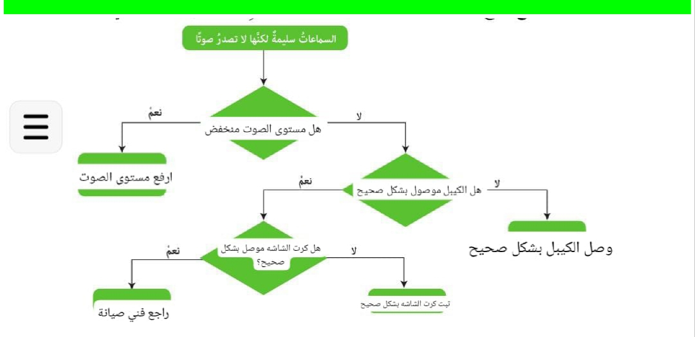

يمكنك الاستماع إلى الأسئلة والإجابات باستخدام القراءة الصوتية.
القراءة غير مفعّلة.
أقيم تعلمي
المعرفة: أوظف في هذا الدرس ما تعلمته من معارف في الإجابة عن الأسئلة الآتية.
السؤال الأول: أضع إشارة (√) بجانب العبارة الصحيحة، وإشارة (x) بجانب العبارة غير الصحيحة في ما يأتي:
1. أحد مسببات أعطال المكونات المادية لجهاز الحاسوب انتهاء العمر الافتراضي لها.
الإجابة:
✓
2. من أسباب العطل ألوان الشاشة رديئة " وجود مجال مغناطيسي بالقرب من الشاشة.
الإجابة:
✓
3. أحد أسباب العطل حجم ذاكرة RAM المدوّن على الشاشة غير صحيح "، تشغيل عدد كبير من الملفات والبرامج.
4. عدم ظهور شيء على شاشة جهاز الحاسوب بعد التأكد من صلاحية كرت الشاشة والذاكرة RAM، يدل على عطل في وحدة المعالجة المركزية (CPU).
5. تتم عملية النسخ على القرص المدمج بوساطة شعاع من الليزر لإحداث علامات على سطح القرص الضوئي بوساطة رؤوس الكتابة على السطح البلاستيكي للقرص.
6. القرص الصلب HDD أكثر موثوقية من القرص الثابت SSD.
الإجابة:
x
السؤال الثاني: أذكر أسباب الصيانة المناسبة وإجراءاتها لكل من الأعطال الآتية:
العطل: تعليق الجهاز بصورة مستمرة (Hang)
السبب المحتمل:
- امتلاء الذاكرة RAM.
- تشغيل برامج كثيرة في آن واحد.
- وجود فيروسات.
إجراءات الصيانة:
- إغلاق البرامج غير الضرورية.
- عمل فحص فيروسات.
- زيادة RAM إذا لزم.
العطل: عدم توافر الألوان الأساسية للشاشة
السبب المحتمل:
- خلل في تعريف كرت الشاشة.
- مشكلة في الكابل أو المنفذ.
إجراءات الصيانة:
- إعادة تثبيت التعريف المناسب.
- التأكد من سلامة الكابل وتوصيله جيدًا.
العطل: مؤشر الفأرة يتحرك بسرعة كبيرة أو بطيئة
السبب المحتمل:
- إعدادات غير صحيحة في النظام.
- عطل في الماوس نفسه.
إجراءات الصيانة:
- تعديل إعدادات سرعة المؤشر من لوحة التحكم.
- تجربة فأرة أخرى.
العطل: ارتفاع حرارة CPU وتوقف مفاجئ في عمل الجهاز
السبب المحتمل:
- تراكم الغبار على المروحة أو المبدد الحراري.
- ضعف نظام التبريد.
إجراءات الصيانة:
- تنظيف المروحة والمبدد الحراري.
- وضع معجون حراري جديد.
- التأكد من عمل المروحة بشكل صحيح.
العطل: عدم استجابة بعض المفاتيح عند الضغط عليها
السبب المحتمل:
- وجود غبار أو سوائل داخل لوحة المفاتيح.
- عطل في لوحة المفاتيح نفسها.
إجراءات الصيانة:
- تنظيف لوحة المفاتيح.
- استبدالها إذا لزم الأمر.
السؤال الثالث: أذكر المكونات الأساسية لبطاقة الشاشة.
الإجابة: المكونات الأساسية لبطاقة الشاشة GPU / Video Card:
- المعالج الرسومي (GPU - Graphics Processing Unit): مسؤول عن معالجة الرسومات والصور.
- الذاكرة الفيديو (VRAM): تخزن البيانات والصور قبل عرضها على الشاشة.
- منافذ الإخراج (Port(s) مثل HDMI، VGA، DisplayPort لتوصيل الشاشة.
- المروحة ونظام التبريد لتبريد البطاقة أثناء العمل.
- اللوحة الإلكترونية (PCB) التي تُثبت عليها المكونات وتربطها.
- مزود الطاقة (Power Connector) لتزويد البطاقة بالطاقة الكهربائية في البطاقات القوية.
السؤال الرابع: اتبع إجراءات الصيانة العلاجية لسماعة الحاسوب من خلال المخطط.
الإجابة:

المهارات
أوظف مهارات التفكير الناقد والتواصل الرقمي والبحث الرقمي في الإجابة عن الأسئلة الآتية:
السؤال الأول: أقترح أسباب العطل مروحة مزود الطاقة (Power Supply) تصدر صوتا عاليًا، وأحدد إجراءات الصيانة الواجب اتباعها.
العطل: مروحة مزود الطاقة (Power Supply) تصدر صوتا عاليا.
الأسباب المحتملة (تحليل نقدي):
- تراكم الغبار داخل المروحة مما يعيق دورانها.
- تلف في محمل المروحة (Bearing) يؤدي إلى ضوضاء عند الدوران.
- ارتخاء براغي التثبيت مما يسبب اهتزازا وصوتا.
- تشغيل الجهاز لفترة طويلة بدون تهوية جيدة يؤدي لزيادة سرعة المروحة.
إجراءات الصيانة (حلول عملية):
- فصل الجهاز عن الكهرباء قبل أي صيانة.
- تنظيف المروحة من الغبار باستخدام منفاخ هواء أو فرشاة ناعمة.
- التأكد من إحكام براغي التثبيت لمنع الاهتزاز.
- إذا استمر الصوت، استبدال المروحة بأخرى جديدة.
- تحسين تهوية الجهاز (وضعه في مكان جيد التهوية وعدم سد فتحات التبريد).
السؤال الثاني: أبين الأسباب التي تؤدي إلى بطء جهاز الحاسوب.
الإجابة:
- قلة حجم RAM.
- تشغيل برامج كثيرة في آن واحد.
- وجود فيروسات أو برمجيات ضارة.
- امتلاء القرص الصلب أو وجود تجزئة.
- ارتفاع حرارة المعالج أو المكونات.
- تعريفات قديمة أو نظام تشغيل غير محدّث.